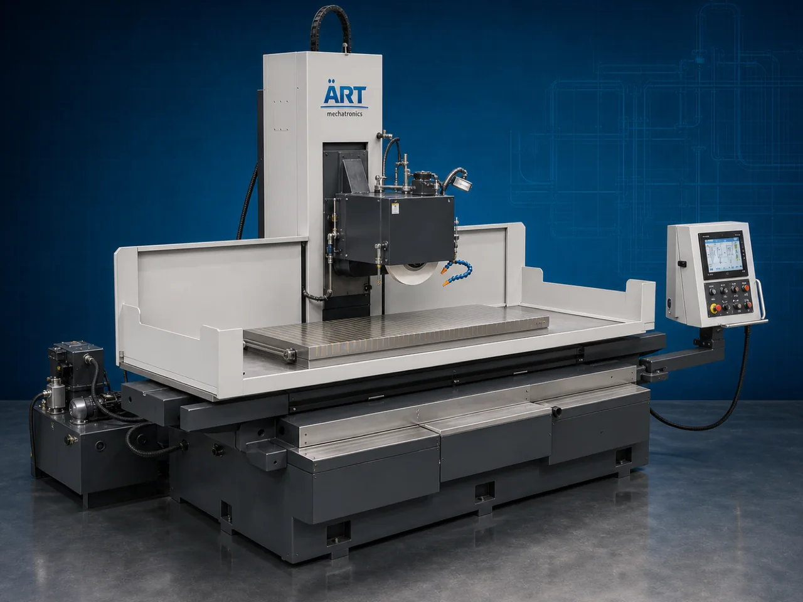

Surface Grinder Machine (Industrial Blade Sharpening & Precision Grinding System)
A Surface Grinder Machine, also known as a Surface Grinding Machine, Blade Sharpening Machine, Precision Surface Grinder, or Industrial Tool Grinding System, is an advanced industrial engineering solution designed for precision grinding, blade sharpening, knife edge finishing, tool reconditioning,…

About the Surface Grinder
Surface grinder systems are widely used for: ✔ Industrial blade sharpening ✔ Knife edge grinding ✔ Tool reconditioning operations ✔ Surface finishing applications ✔ Precision metal grinding ✔ Flat surface machining ✔ Industrial cutter maintenance ✔ Production tool refurbishment
The machine improves: ✔ Blade sharpness and cutting performance ✔ Surface finishing accuracy ✔ Tool life and durability ✔ Production efficiency ✔ Grinding consistency ✔ Industrial machining precision ✔ Maintenance productivity
Industrial surface grinder machines use: ✔ High-speed grinding wheels ✔ Precision magnetic work tables ✔ Servo synchronized feed systems ✔ PLC and HMI automation controls ✔ High-rigidity grinding structures
to automatically grind and sharpen surfaces with superior precision and high industrial productivity.
Surface grinder machines are widely used in industries such as:
Food processing industries Packaging industries Printing industries Paper industries Woodworking industries Metalworking industries Plastic industries Industrial engineering industries
where precision grinding, blade sharpening, and high-accuracy machining are essential.
The machine is highly suitable for: ✔ Industrial blade sharpening ✔ Knife grinding operations ✔ Surface finishing applications ✔ Precision tool maintenance ✔ Flat surface machining ✔ Industrial grinding automation systems
ART Mechatronics offers high-performance surface grinder machines, engineered for continuous industrial operation, precision grinding performance, rugged construction, and reliable long-term industrial productivity.
Working Principle of Surface Grinder Machine
- 1. Material Loading & Workpiece Clamping Blades, knives, tools, or metal workpieces are securely loaded onto magnetic or mechanical work holding tables.
- 2. Grinding Wheel Alignment & Feed Synchronization Process Machine automatically aligns grinding wheel and synchronizes feed movement for accurate grinding operation.
Precision feed systems ensure smooth grinding movement and high surface finishing accuracy.
- 3. Grinding & Sharpening Operation Machine handles grinding of: ✔ Industrial blades ✔ Knives and cutters ✔ Metal tools ✔ Flat steel surfaces ✔ Precision machine parts ✔ Woodworking cutters ✔ Printing blades ✔ Industrial tooling components
accurately and continuously.
- 4. Precision Surface Grinding & Finishing Process Machine performs: Blade sharpening Knife edge grinding Surface flattening Tool reconditioning Polishing Precision finishing
for efficient industrial machining and maintenance operations.
- 5. Intelligent Automation & Cooling Integration Optional systems include: Coolant circulation systems Automatic lubrication systems Digital feed controls Dust collection systems Safety guarding systems
- 6. Finished Component Discharge Processed components discharged automatically for: Machine installation Production line use Tool storage Industrial maintenance operations Export shipment handling
Types of Surface Grinder Machines
- 1. Blade Sharpening Surface Grinder Designed for: ✔ Industrial blade and knife sharpening applications
- 2. Precision Surface Grinding Machine Suitable for: ✔ High-accuracy flat surface machining systems
- 3. Tool & Cutter Grinder Machine Uses: ✔ Industrial tool maintenance and reconditioning operations
- 4. Hydraulic Surface Grinder Machine Designed for: ✔ Heavy-duty industrial grinding systems
- 5. CNC Surface Grinder Machine Suitable for: ✔ Precision automated grinding operations
- 6. Fully Automatic Surface Grinding System Designed for: ✔ Complete industrial grinding automation lines
Industries Using Surface Grinder Machines
🍅 Food Processing Industry Knife sharpening, cutter maintenance, and industrial blade grinding systems. 📦 Packaging Industry Packaging blade sharpening and industrial cutter maintenance systems. 🪵 Woodworking Industry Wood cutting blade sharpening and tool grinding operations. 🖨️ Printing Industry Printing blade grinding and precision surface finishing systems. ⚙️ Metalworking Industry Precision metal grinding and industrial machining operations. 🏭 Industrial Engineering Industry Tool maintenance, surface finishing, and industrial machining systems.
Features & Advantages
✔ High-precision automatic grinding operation ✔ Accurate and uniform blade sharpening systems ✔ Heavy-duty industrial grinding technology ✔ PLC and automation control systems ✔ Improves tool life and grinding consistency ✔ Reduces manual sharpening dependency ✔ Supports multiple industrial blades and tooling components ✔ Reliable long-term industrial performance ✔ Smooth integration with industrial production lines
Technical Highlights
Machine Type: Surface grinder machine Industrial grinding system Blade sharpening machine Component Compatibility: Industrial blades Knives and cutters Metal tools Steel surfaces Printing blades Woodworking cutters Integration: Magnetic work tables Servo feed systems Coolant circulation systems Dust extraction systems Features: PLC control system Touchscreen HMI High-speed grinding wheels Heavy-duty steel structure Precision feed controls Applications: Blade sharpening Knife grinding Surface finishing Tool reconditioning Precision machining Industrial maintenance Automation: Semi-automatic Fully automatic CNC industrial systems
Turnkey Grinding Solutions
ART Mechatronics offers: Complete industrial grinding systems Automatic blade sharpening solutions Precision surface finishing systems Coolant and dust handling integration systems Installation & commissioning After-sales service & AMC
Why Choose Art Mechatronics
Expertise in industrial engineering and automation systems Customized grinding solutions for multiple industries High-performance and precision grinding technology Advanced PLC and CNC automation systems Proven industrial machining performance across sectors
Applications
Food Processing Plants Packaging Manufacturing Facilities Woodworking Industries Printing & Paper Industries Metalworking Workshops Industrial Engineering Units
Related Process Equipment machines
Get pricing & specs for the Surface Grinder
Share the product, target capacity, current process and plant location. These details help our engineers discuss the right machine or line configuration.
One partner, from design to start-up
ART Mechatronics designs, manufactures, installs and commissions your Surface Grinder solution with regional presence in India, UAE and Thailand.